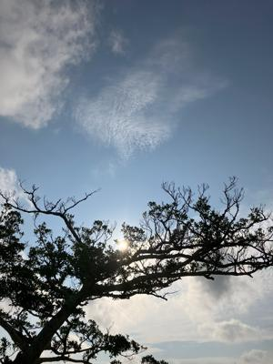
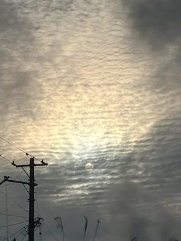

うるがいの話 ある日
最新: ベートーヴェンと三線【うるがいの話 ある日】とは 一日だけのプログです
『うるがいの話』の最新一日だけのプログで、通信料が少なく経済的だ。カニの画像をクリックすると全ての日付が載る『うるがいの話』サイトを表示します
|
|
【うるがいの話】 うるがい(ｳﾙｶﾞｲ urugai)とは、『もずくがに』の名前でとても大きくなります。 |
|---|---|
|
|
【カミマヤーの話】 猫のことを方言でマヤーといいます。カミマヤー（kamimayaa）とは、神の猫のことです。 |
|
【たながぁの音楽】 たながぁ（ﾀﾅｶﾞｰ tanagaa）とは手長えびのことで、何種類かあり大きいのは車 エビぐらいになります。 |

|
【ぶながぁの話】 ぶながぁ(ﾌﾞﾅｶﾞｰ bunagaa)とは、赤い髪の毛、赤い身体、そして身長は１ｍ２０ｃｍ ぐらい、川の蟹を食べているの目撃された。場所は沖縄県国頭郡大宜味村のと ある村僕の隣近所に住んでいる爺さんから、聞いた話です。 |
|
|
【ギーマの話】 ギーマ(giima)とは、山原の里山に咲くスズランに似た、 花を付けます。実は食べられます、 気が付くと口の周りが紫になっています。 |
2024年04月22日 (月）ベートーヴェンと三線
15:07

ベートーヴェンの曲は三線と相性が、いいと思う。ピアノの楽譜も著作権な
しで比較的容易にゲットできる。『ピアノソナタ第８番（悲愴）』、『運命
』、『月光』、『エリーゼのために』をユーチューブ動画にアップした。
『月光』は、ピアノの初心者が弾いてみたいという曲らしい、私の次作成す
る曲としてポストイットに書いていた。ところで、この曲長いのです。
２０１小節があるのだが、６９小節にした。それでも、５分３６秒もある。
だから、ここにリンクしない。因みに楽譜は＃が４つ（ホ長調）だが、三線
で弾きやすくするためｂが一つ（ヘ長調）へ移調している（スゴイ！）。

作成し終えたところ、フと『エリーゼのために』が頭をよぎる。連続して楽
譜ソフトに楽譜を打ち込む。その昔、『ハチのムサシは死んだのさ』という
「エリーゼのために」を編曲カバーした歌があった。ドラムも入れてみるべ
と、作成した。三線を実際に弾くとテンポは、早すぎると思ったが、マ、い
いかと完成させた。暇人は、朝からこの２曲をユーチューブ動画にアップし
た。
『ベートーヴェン エリーゼのために 三線 MuseScore3』２分４０秒
ユーチューブ動画
１５時００分 ビットコインの総資産 ￥２９、７３５（↑６５６）